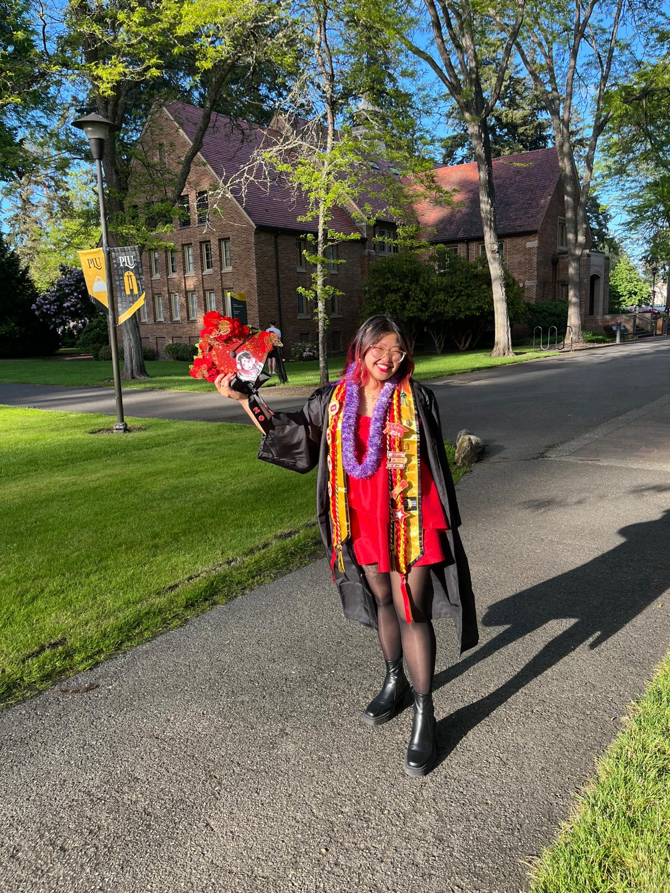

Welcome! I am Lisa Hà, an artist, designer, and illustrator.
As an American-born daughter of Vietnamese immigrants, I grew up in shifting households and navigating the liminal spaces of being Asian American and queer🌈. The ways I experience the world lead me to create in order to connect to my communities, process, grieve, reflect, and reimagine. I believe in the abundant and transformative nature of art and stories to work towards a socially and environmentally just world.
Currently I am…
🎨 designing small tattoo ideas.
✨ crocheting cute apparel (slow fashion yay!).
🧳 unpacking after studying abroad for 3 back-to-back semesters.
I am looking for neat projects all year round and graphic/visual design or ux/ui internships for Winter 2025. Feel free to contact me for business inquiries at lh.halisa@gmail.com.